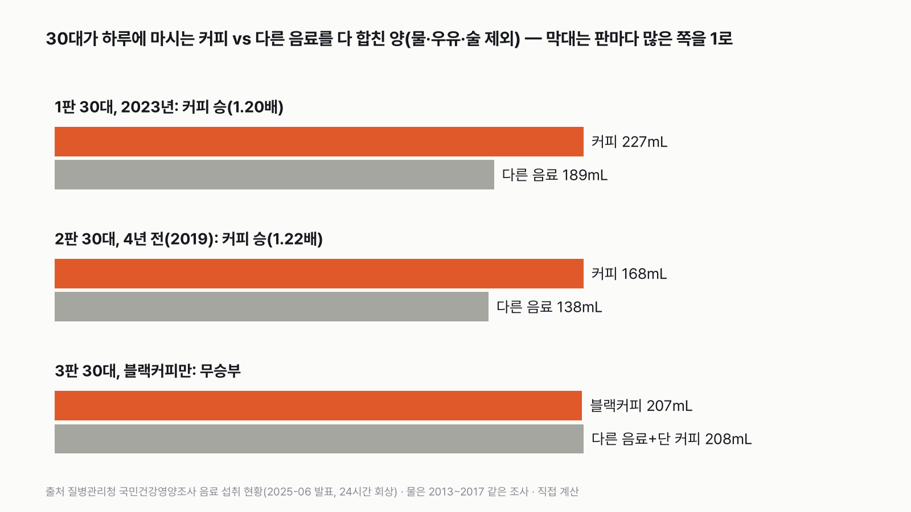
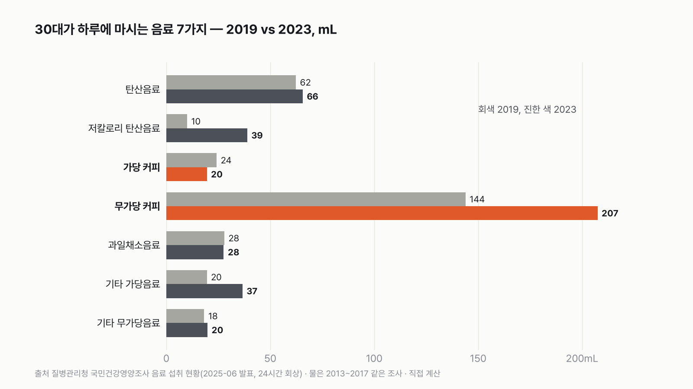
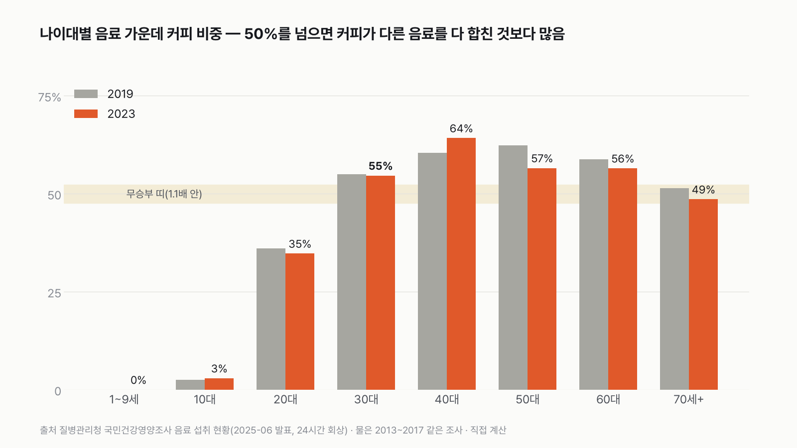
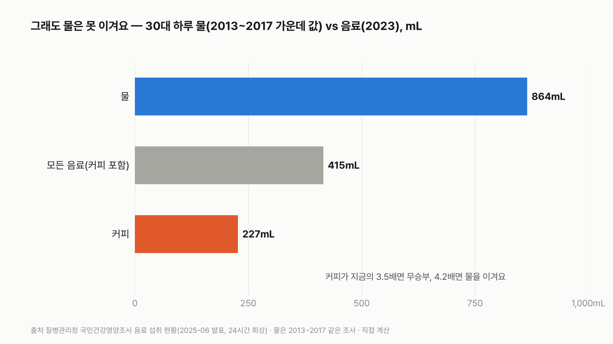

30대에게 커피는 다른 음료를 다 합친 것보다 많을까
아메리카노를 하루 한두 잔 마시는 사람이라면 고르기 쉬울 것 같지만, 탄산음료와 단 음료도 만만치 않아요. 먼저 골라 주세요.
독자 투표
- 탄산음료, 제로 콜라, 주스, 이온음료, 단 커피와 아메리카노. 30대가 하루에 마시는 음료를 다 모아 봤어요.
- 커피 한 가지가 나머지 음료를 다 합친 것보다 많을까요?
- 질병관리청 국민건강영양조사로 세 판 겨뤘어요. 투표하면 결과가 바로 아래에 열려요.
조건과 규칙
- 커피는 아메리카노 같은 블랙커피와 믹스커피·라테 같은 단 커피를 합쳐요.
- 다른 음료는 탄산음료, 제로 탄산음료, 과일·채소 음료, 그 밖의 단 음료와 안 단 음료를 다 합쳐요.
- 물, 우유, 술은 양쪽 모두에서 빼요. 국가 조사에서 '음료'로 따로 세는 것끼리만 붙여요.
- 2023년 30대, 4년 전(2019년) 30대, 블랙커피만 셌을 때, 세 판으로 겨뤄요.
결과 요약
3판 2승 1무 → 최종 커피 승(근소)
- 30대가 하루에 마시는 커피는 227mL, 다른 음료를 다 합치면 189mL예요. 커피가 음료의 55%로, 1.2배 많아요.
- 아메리카노 같은 블랙커피만 세면 207mL 대 208mL로 딱 비겨요. 단 커피 20mL가 승부를 갈랐어요.
- 그래도 물은 못 이겨요. 30대가 마시는 물은 864mL로, 커피가 지금의 3.5배는 마셔야 비겨요.
그래서? 30대의 음료는 절반이 조금 넘게 커피예요. 20대는 다른 음료가, 40대는 커피가 훨씬 많아요.
독자 예상 vs 데이터 결과
30대에게 커피는 다른 음료를 다 합친 것보다 많을까?
데이터로 보면 많다. 30대 커피 227mL, 다른 음료 합 189mL로 커피가 1.2배예요. 블랙커피만 세면 207 대 208로 비겨요.


숫자 두 개로 줄이면 이래요. 30대가 마시는 음료 100mL 가운데 55mL가 커피예요. 블랙커피만 세면 정확히 절반이에요.
| 판 | 커피 | 다른 음료 | 승자 | 값의 종류 |
|---|---|---|---|---|
| 1판 30대, 2023년 | 227mL | 189mL | 커피(1.20배) | 측정 |
| 2판 30대, 2019년 | 168mL | 138mL | 커피(1.22배) | 측정 |
| 3판 30대, 블랙커피만 | 207mL | 208mL(단 커피 포함) | 무승부(1.00배) | 측정 |
| 최종 | 3판 2승 1무 → 커피 승 |
세 판 모두 질병관리청이 발표한 같은 표의 값이에요(물·우유·술 제외). 가정을 넣지 않고 측정값만 썼어요. 이 규칙이면 최종 승자는 커피예요. 다만 1판과 2판 모두 1.2배라, 무승부 기준(1.1배)을 겨우 넘었어요. 근소한 승리예요.
1판 30대, 2023년: 커피 승(1.20배)
2023년 30대는 하루에 블랙커피 207mL, 단 커피 20mL를 마셨어요. 합쳐서 227mL예요. 다른 음료는 탄산음료 66mL, 제로 탄산음료 39mL, 그 밖의 단 음료 37mL, 과일·채소 음료 28mL, 그 밖의 안 단 음료 20mL로, 다 합쳐 189mL예요.
커피가 38mL 많아요. 비율로는 커피가 음료의 55%, 다른 음료가 45%예요. 이긴 건 맞지만 넉넉한 차이는 아니에요.
2판 30대, 4년 전(2019년): 커피 승(1.22배)
4년 전 30대도 커피가 이겼어요. 커피 168mL, 다른 음료 138mL였어요. 4년 사이 커피도 다른 음료도 3분의 1씩 늘어서 비율은 거의 그대로였어요. 커피가 늘어난 만큼 제로 탄산음료(10mL → 39mL)와 그 밖의 단 음료(20mL → 37mL)도 늘었어요.
저는 4년 사이 커피 비중이 크게 올랐을 줄 알았어요. 동네마다 카페가 늘었으니까요. 그런데 30대의 커피 비중은 55%에서 55%로 그대로였어요. 커피를 더 마신 만큼 다른 음료도 더 마셨어요.


3판 블랙커피만: 무승부(1.00배)
단 커피를 빼고 아메리카노 같은 블랙커피만 세면 어떨까요? 단 커피 20mL를 '다른 음료' 쪽으로 옮기면 블랙커피 207mL, 나머지 208mL예요. 1mL 차이로 딱 비겨요. 30대에게 블랙커피는 정확히 음료의 절반이에요.
결국 1판의 승리는 단 커피 20mL가 만든 거예요. 믹스커피와 라테를 빼면 커피 혼자서는 다른 음료를 넘지 못해요.


다른 나이대는 어떨까요
30대는 커피가 다른 음료를 넘어서기 시작하는 나이대예요. 20대는 커피 비중이 35%로, 다른 음료가 1.9배 많아요. 탄산음료와 단 음료를 많이 마시는 나이라서예요. 40대에서 커피 비중이 64%로 가장 높고, 50대와 60대도 둘 다 57%쯤으로 커피가 앞서요. 70세 이상은 49%로 무승부예요.
10대는 커피 비중이 3%뿐이고, 9세 이하는 0%예요. 커피가 음료의 주인공이 되는 건 30대부터예요.


반전: 그래도 물은 못 이겨요
커피가 다른 음료를 다 합친 것보다 많다고 해도, 물과는 비교가 안 돼요. 30대가 하루에 마시는 물은 864mL예요. 커피(227mL)의 3.8배, 커피를 포함한 모든 음료(415mL)의 2.1배예요. 물 값은 같은 조사의 2013~2017년 가운데 값이라 연도가 달라요.
커피가 물과 비기려면 지금의 3.5배를, 물을 이기려면 4.2배를 마셔야 해요. 20~64세 성인 전체로 넓히면 물 860mL, 커피 164mL로, 커피가 4.8배를 마셔야 비기고 5.8배를 마셔야 이겨요. 물이 지금의 21%로 줄면 비기고, 17%로 줄면 커피가 이겨요.
같은 논문의 2013~2017년 값으로도 확인했어요. 30~49세 남자는 물을 평균 1,284mL, 음료를 467mL 마셔 물이 2.7배였어요. 여자는 물 1,065mL, 음료 249mL로 4.3배였어요. 연도를 맞춰도 물이 크게 앞서요.
커피는 4년 사이 20~64세 기준으로 1.27배가 됐어요. 한 해 6%씩 늘어나는 속도예요. 이 속도가 그대로 이어진다고 단순 계산하면, 성인 전체에서 커피가 물과 비기기까지 약 26년, 물을 넘기까지 약 29.5년이 걸려요. 예측이 아니라 지금 속도를 이어 붙인 계산이에요.
이 규칙과 자료로 보면 30대에게 커피는 다른 음료를 다 합친 것보다 근소하게 많아요(1.2배). 블랙커피만 세면 딱 반이에요. 그래도 물 앞에서는 4분의 1에 그쳐요.
이 숫자는 어디서 왔나요
출처
기준일 음료는 2019년·2023년, 물은 2013~2017년 국민건강영양조사 값이에요. 처음 조건은 2026년 11월 9일에 정했고, 같은 날 결과를 본 뒤 질문을 바꿨어요(아래 '쓰기 전에 정한 것').
어떻게 셌나요
- 음료 자료: 질병관리청이 2025년 6월 발표한 '최근 5년간 국민의 음료 섭취 현황'의 나이대별 음료 7종 섭취량(2019년·2023년)을 그대로 썼어요. 하루 동안 먹고 마신 것을 기억해 답하는 24시간 회상조사예요. 무게(g)로 낸 값이라 1g을 1mL로 봤어요. 7종을 더한 값이 발표된 나이대 합계와 같은지 확인했어요.
- 커피: 가당 커피 + 무가당 커피. 다른 음료: 탄산음료, 저칼로리 탄산음료, 과일채소음료, 기타 가당음료, 기타 무가당음료.
- 빠진 것: 이 표의 '음료'에는 물, 우유, 술이 들어 있지 않아요. 그래서 양쪽 모두에서 빠져요.
- 판정: 판마다 많은 쪽이 이겨요. 두 쪽 차이가 1.1배보다 작으면 무승부예요. 3판은 단 커피를 다른 음료 쪽으로 옮겨서 셌어요.
- 물(점수 밖): 2020 한국인 영양소 섭취기준을 만들 때 정리한 2013~2017 국민건강영양조사 물 섭취량 가운데 값을 썼어요. 30대는 30~49세 남녀 가운데 값의 평균이에요. 성인 전체는 2024년 12월 주민등록인구로 나이대 무게를 줬어요.
한계 4가지
이 데이터로 말할 수 없는 것
- 발표 표에 표준오차가 없어 1.2배가 오차 범위를 넘는지는 확인하지 못했어요. 그래서 '근소한 승리'라고만 써요.
- 우유와 두유, 액상 발효유는 국가 조사에서 '음료'가 아닌 다른 식품군으로 세요. 이것들을 다른 음료에 넣으면 결과가 달라질 수 있어요.
- 30대의 물 값은 30~49세로 묶인 값이고, 음료보다 6~10년 전 조사예요.
- 하루 기억에 기대는 조사라 평소보다 적게 또는 많게 답했을 수 있어요.
다음 대결
대결 다 보기실험맨 vs 고양이 그루밍
실험맨 vs 고양이, 세 판 승부로 하루 씻고 꾸미는 시간이 더 긴 쪽은 누굴까?
A실험맨vsB고양이
투표하러 가기
대결실험맨투표했어요기린 승고3 vs 기린
고3 실험맨과 기린, 하루에 누가 더 적게 잘까?
A고3vsB기린
투표하러 가기
대결실험맨투표했어요60세 이상 승60세 이상 vs 20대
60세 이상 여성 실험맨과 20대 여성 실험맨, 하루 사람을 만나 어울리는 시간은 누가 더 길까?
A60세 이상 여성vsB20대 여성
투표하러 가기
대결실험맨투표했어요결과: 절반 넘는다실험맨 vs 혼밥
50대 남성 실험맨, 저녁을 대체로 가족과 함께 먹는 사람이 100명 중 절반을 넘을까?
A절반 넘는다vsB절반 못 넘는다
투표하러 가기
대결실험맨투표했어요결과: A실험맨 vs 월세
서울에 혼자 사는 20대 여성 실험맨, 작은 오피스텔 월세가 월급의 3분의 1을 넘을까?
A3분의 1 못 넘는다vsB3분의 1 넘는다
투표하러 가기
대결실험맨투표했어요결과: B실험맨 vs 결혼식
30대 신혼부부 실험맨, 둘이 석 달 번 돈으로 결혼식 하루 비용을 낼 수 있을까?
A석 달이면 낸다vsB석 달로는 모자란다
투표하러 가기
대결실험맨투표했어요결과: B실험맨 vs 집안일
30대 여성 실험맨의 1년 집안일, 돈으로 바꾸면 1년 번 돈보다 클까?
A집안일 값이 더 크다vsB번 돈이 더 크다
투표하러 가기
대결실험맨투표했어요무승부실험맨 vs 등록금
20대 여성 실험맨이 1년 동안 영상·SNS 보는 시간, 최저시급으로 치면 대학 1년 등록금을 넘을까?
A넘는다vsB못 넘는다
투표하러 가기
새 글 나오면 받아 보기
피드 리더 앱에 이 사이트 주소를 한 번 넣어 두면, 새 글이 올라올 때 앱에 떠요. 가입이나 메일 주소는 필요 없어요.
받는 법 보기
- 피드 리더 앱을 하나 골라요. 새 글을 모아 보여 주는 앱이에요. 예를 들면 Feedly나 Inoreader가 있어요. 둘 다 무료고 웹·휴대폰에서 써요.
- 앱에서 '구독 추가'(+)를 누르고 아래 주소를 붙여 넣어요.
- 끝이에요. 새 글이 올라오면 앱 목록에 떠요.
https://protofu.github.io/opendata-insight/feed.xmlFeedly를 쓴다면 여기를 눌러 바로 추가할 수도 있어요.